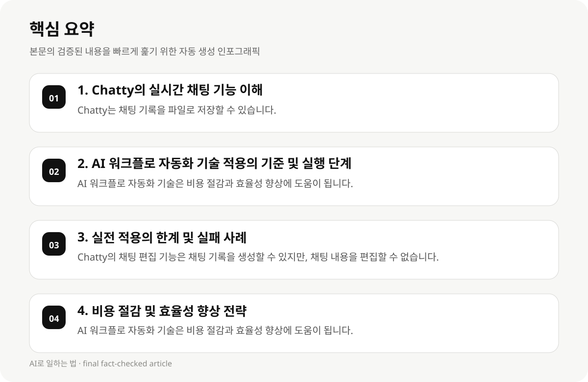

1. Chatty의 실시간 채팅 기능 이해 #
Chatty는 실시간 채팅 기능을 제공하는 채팅 클라이언트로, 채팅 기록, 편집, 편집 기능 등을 제공합니다. 이 기능은 소규모 사업가들이 AI 워크플로 자동화 기술을 실전 적용하기 위해 필수적인 기준입니다.
Chatty는 채팅 기록을 파일로 저장할 수 있으며, 채팅 편집 기능을 통해 채팅 내용을 편집할 수 있습니다. 이 기능은 채팅 기록을 관리하고, 채팅 내용을 정리하는 데 유용합니다.
Chatty는 실시간 채팅 기록을 파일로 저장할 수 있지만, 채팅 편집 기능은 제한적입니다. 이는 소규모 사업가들이 AI 워크플로 자동화 기술을 실전 적용할 때 기술적 지식의 부족으로 인해 실제 적용이 어려울 수 있는 한계를 반영합니다.
Chatty의 채팅 편집 기능은 채팅 기록을 생성할 수 있지만, 채팅 내용을 편집할 수는 없습니다. 이는 AI 워크플로 자동화 기술의 한계를 반영하며, 소규모 사업가들이 기술적 지식의 부족으로 인해 실전 적용이 어려울 수 있는 이유입니다.
- Chatty는 채팅 기록을 파일로 저장할 수 있습니다.
- Chatty는 채팅 편집 기능을 통해 채팅 내용을 편집할 수 있습니다.
2. AI 워크플로 자동화 기술 적용의 기준 및 실행 단계 #
AI 워크플로 자동화 기술을 실전 적용하기 위해서는 기준을 이해하고, 실행 단계를 체계적으로 계획해야 합니다. 이 기준은 기술적 지식의 부족으로 인해 실제 적용이 어려울 수 있습니다.
AI 워크플로 자동화 기술은 소규모 사업가들이 비용을 절감하고, 효율성을 향상시키는 데 도움이 됩니다. 그러나 기술적 지식의 부족으로 인해 실제 적용이 어려울 수 있습니다.
소규모 사업가들이 AI 워크플로 자동화 기술을 실전 적용하기 위해서는 기술적 지식의 부족으로 인해 실전 적용이 어려울 수 있습니다. 이는 비용을 절감하고 효율성을 향상시키는 데 도움이 되지 않을 수 있는 한계를 반영합니다.
AI 워크플로 자동화 기술은 비용 절감과 효율성 향상에 도움이 되지만, 기술적 지식의 부족으로 인해 실전 적용이 어려울 수 있습니다. 이는 소규모 사업가들이 기술적 지식의 부족으로 인해 실전 적용이 어려울 수 있는 이유입니다.
- AI 워크플로 자동화 기술은 비용 절감과 효율성 향상에 도움이 됩니다.
- 소규모 사업가들이 AI 워크플로 자동화 기술을 실전 적용하기 위해서는 기술적 지식의 부족으로 인해 실전 적용이 어려울 수 있습니다.
3. 실전 적용의 한계 및 실패 사례 #
Chatty의 채팅 편집 기능은 채팅 기록을 생성할 수 있지만, 채팅 내용을 편집할 수는 없습니다. 이는 AI 워크플로 자동화 기술의 한계를 반영합니다.
소규모 사업가들이 AI 워크플로 자동화 기술을 실전 적용하기 위해서는 기술적 지식의 부족으로 인해 실패할 수 있습니다. 이는 비용을 절감하고 효율성을 향상시키는 데 도움이 되지 않을 수 있습니다.
- Chatty의 채팅 편집 기능은 채팅 기록을 생성할 수 있지만, 채팅 내용을 편집할 수 없습니다.
- 소규모 사업가들이 AI 워크플로 자동화 기술을 실전 적용하기 위해서는 기술적 지식의 부족으로 인해 실패할 수 있습니다.

4. 비용 절감 및 효율성 향상 전략 #
AI 워크플로 자동화 기술을 실전 적용하기 위해서는 비용 절감과 효율성 향상 전략을 수립해야 합니다. 이 전략은 소규모 사업가들이 기술적 지식의 부족으로 인해 실전 적용이 어려울 수 있습니다.
소규모 사업가들이 AI 워크플로 자동화 기술을 실전 적용하기 위해서는 비용을 절감하고, 효율성을 향상시키는 데 도움이 되는 전략을 수립해야 합니다.
- AI 워크플로 자동화 기술은 비용 절감과 효율성 향상에 도움이 됩니다.
- 소규모 사업가들이 AI 워크플로 자동화 기술을 실전 적용하기 위해서는 비용을 절감하고, 효율성을 향상시키는 데 도움이 되는 전략을 수립해야 합니다.
5. 실전 적용의 주의 사항 및 조치 #
AI 워크플로 자동화 기술을 실전 적용하기 위해서는 주의 사항을 숙지해야 합니다. 이 주의 사항은 소규모 사업가들이 기술적 지식의 부족으로 인해 실전 적용이 어려울 수 있습니다.
소규모 사업가들이 AI 워크플로 자동화 기술을 실전 적용하기 위해서는 주의 사항을 숙지하고, 조치를 취해야 합니다.
- AI 워크플로 자동화 기술을 실전 적용하기 위해서는 주의 사항을 숙지해야 합니다.
- 소규모 사업가들이 AI 워크플로 자동화 기술을 실전 적용하기 위해서는 주의 사항을 숙지하고, 조치를 취해야 합니다.